- 政府はバリア・ブンタウ省がベトナムにおける日系裾野産業の誘致強化２地域の一つとして指定されました。
- 2011年10月31日、東京において両国の首相がバリア・ブンタウ省及びハイホン市にて日本側のサポートで日系企業専用工業団地を展開するという覚書を締結しました。
- バリア・ブンタウ省は日系企業専用工業団地を展開中です。
- 昨年よりJICAがバリア・ブンタウ省において日系専用工業団地建設するため、様々な調査を行ってきました。
- また、バリア・ブンタウ省と川崎市は両省の友好を強め、バリア・ブンタウ省に円滑に投資する環境作りのためMOUを締結しました。
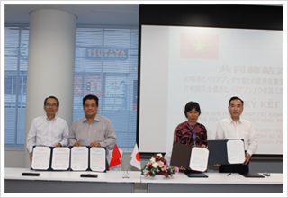
川崎省とバリア・ブンタウ省の自民委員会のMOU締結記念写真
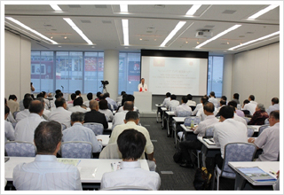
日本におけるバリア・ブンタウ省の投資誘致セミナー
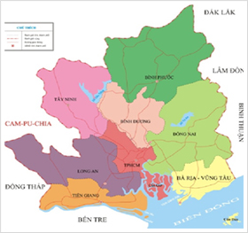
現在の裾野産業は全国の部品ニーズの25－30％しか供給対応できていません。現在、ベトナムに進出済み日本の大手企業はTOYOTAベトナム、HONDAベトナム、YAMAHAベトナム、SUZUKIベトナム、CANON、PANASONIC, SONY…これら大手企業はベトナムの機械、電子などの裾野産業の大きな市場を作り出しています。また、ホーチミン市、ドンナイ省、バリア・ブンタウ省、ビンズオン省、ビン・フック省、テイニン省、ロンアン省、チィエンザン省の国の最も大きな経済地域の南部重点経済圏に位置しており、大きな消費市場が近くにございます。
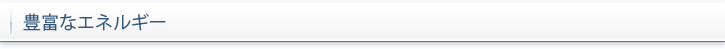
ガス
バリア・ブンタウ省は海底石油とガスの埋蔵量はそれぞれ1.5ビリオントンと1,000ミリオンm３。毎年13～14ミリオントン原油及び6～7ビリオンm３ガスを開拓しています。
電力
バリア・ブンタウ省は国の電力生産の中心地であり全国の発電量の40％を占めます。
水資源
メインの水源はThi Vai川, Dinh川, Ray川から供給されています。Thi Vai川の川底は広くて深いため、水上交通及び海運に大変便利です。工業、農業、生活用の水は殆どDinh川とRay川から提供しています。地下水の汲み上げ可能量は70,000m3/日です。地下水は地下の60-90mにあり、平均容量は10 - 20m3/sなので汲み上げ業務はかなり容易です。現在バリア・ブンタウ省の給水場の総能力は約95,000 m3/日(28,000 m3/日1996年より3倍アップ)
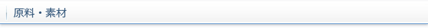
機械・製造の原料：現在Vina Kyoei, Posco, Posco - SS, Nippon Steel, China Steel Sumikinの高質鉄鋼工場が活動しています。
Phu My化学及び樹脂工場、ロンソンにあるMien Nam石油化工工場などが樹脂材料を生産しています。
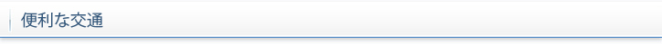
空路
省内に観光客及び石油調査・開拓用のブンタウ空港とコンダオ空港2つの空港があり、ブンタウ市－コンダオ島－ホーチミン市の間運行されています。
バリア・ブンタウ省からホーチミン市の国際空港まで車で2時間ほどかかります。
近い将来にできる予定のロン・タイン新国際空港までの距離は70km、ほかの重点工業団地及びカイメップ・ティバイ国際港までの距離は30km－70km程度です。
海路
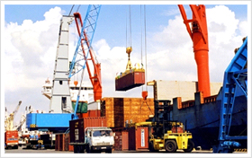
カイメップ・ティバイ港と世界各港を結ぶ海路
カイメップ・ティバイ港はベトナムの輸出入中心港として計画されました。現在深さ14m、130,000DWTの貨物船が入港可能です。今後さらに16mの深さまで掘り、160,000DWT～200,000DWTの貨物船も入港できるよう省として計画しています。
カイメップ・ティバイ港から日本まではおよそ7日間かかります。
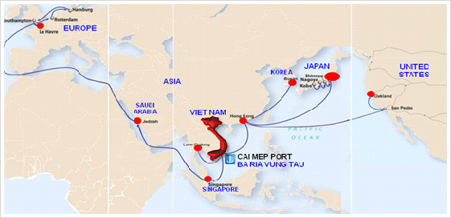
カイメップ・ティバイ港と世界各港を結ぶ海路
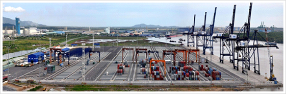
陸路
バリア・ブンタウ省は多くの国道があり、各方面への交通が非常に便利です。例えば国道51号線はドンナイ省とつながり、国道55号線は中部とつながり、国道56号線は中部高原とつながっています。
将来、バリア・ブンタウ省とドンナイ省を結ぶ新たなビエンホア-ブンタウ高速道路（約68km）も建設する計画です。
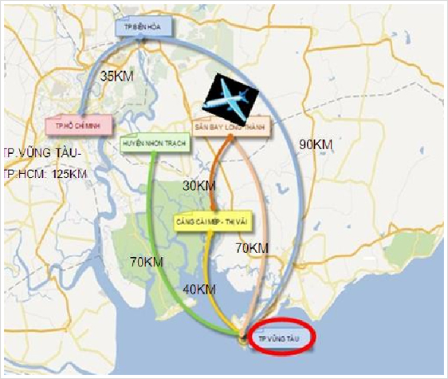
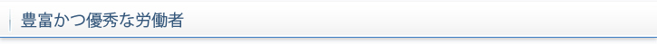
専門教育を受けた労働者の割合は55％と占めます。毎年新たにバリア・ブンタウ省内で労働年齢に達する労働者数は12,000人です。
省は 今後の日系企業の需要に沿い、日本語が話せる1,000人の技術者教育を実施しております。
サービスとユーティリティ
バリア・ブンタウ省は全面的に社会的なインフラが整っていて、治安が安定し、海外投資家が居住できる環境基準を満たしています。
ホテル、リゾート：省に166ホテル及びリゾートがあり、5つ星ホテル１つ、7つのホテルリゾートが在ります。
レンタルオフィス及び付帯サービス付き3星レベルのアパート：Seaview & Lakeside, Ocean View Manor, Phu Myアパート, Petro Tower。
スーパーマーケット、デパート：Imperial Plaza、 Dai Hungショッピングセンター、Metro Vung Tau。
遊園地：ベトナムの有名な観光地であるブンタウ市にはブンタウwater park、Vung Tauゴルフ場、Long Hai海浴場、Binh Chau温泉、Con Dao観光地などがあります。